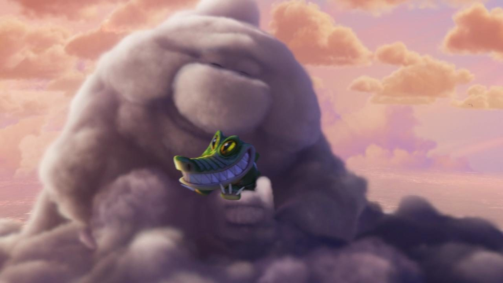
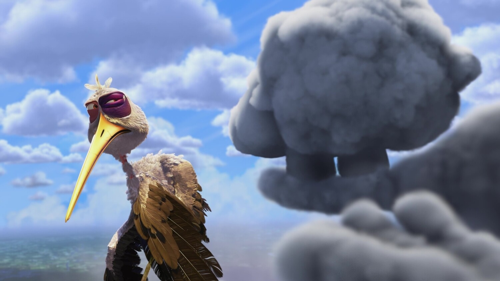
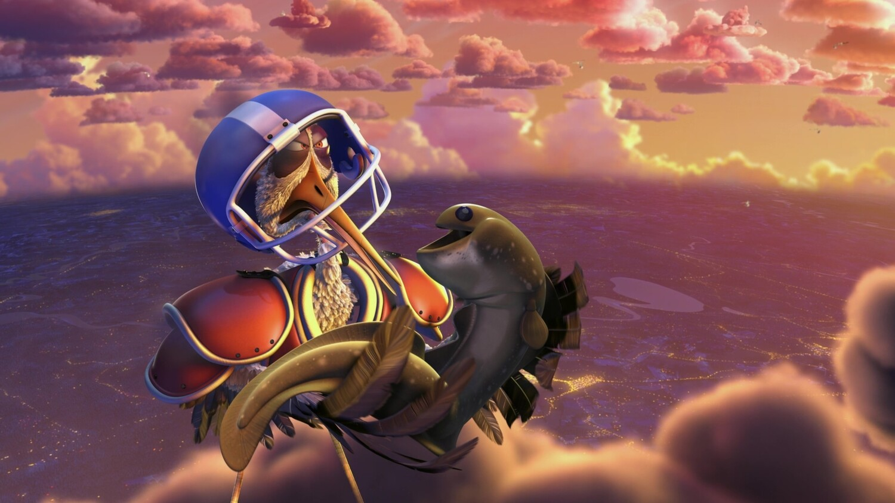

Лёгкий путь
Бросить
Улететь туда, где мягко и безопасно. Не нужно ничего менять и не нужно ни к кому приспосабливаться.
00 / 05 Пролог
Разбор мультфильма о дружбе, которая выдерживает любую погоду
Бросить человека — легко. Найти подход и сохранить отношения — путь сложный, но именно он того стоит.
В кинотеатрах шёл перед полнометражным «Вверх». Вся история рассказана без единой реплики — только жестами, погодой и музыкой.
Глава первая · Мир
Детёнышей здесь не находят в капусте. Их лепят облака, а аисты разносят по домам. Котята, щенки, зайчата — и всегда счастливые родители.
Глава вторая · Конфликт

У одной серой тучи всё идёт не по плану. Она старается не меньше других, но из неё выходят зубы, иглы и плавники.
Облака-соседи
Гас
Глава третья · Цена

Другие аисты давно облетают Гаса стороной. Каждая доставка — это укусы, уколы и синяки. Но Пек всё равно прилетает.
Глава четвёртая · Развязка

Пек улетает к соседнему облаку — мягкому и безопасному.
Гас решает, что его бросили, и плачет грозой.
Пек прилетает обратно — уже в шлеме и наплечниках.
Моё мнение
Дружба в мультфильме — это настоящая жизнь, рассказанная простыми словами.
Лёгкий путь
Улететь туда, где мягко и безопасно. Не нужно ничего менять и не нужно ни к кому приспосабливаться.
Сложный путь
Понять, что у друга просто такой характер, и придумать, как быть рядом. Это труднее, зато отношения остаются.
Главный ход
Пек улетел не искать, где проще,
а за бронёй.
Гас не изменился, и Пек не стал требовать этого. Он нашёл способ дружить с тем, какой Гас есть, и пройденный путь окупился.
Как это бывает в жизни
Новая работа, новый проект, новое увлечение — как только начинаются трудности, кажется, что где-то будет проще. Но там будут свои крокодилы. Дело нужно довести до конца.
Трудности — не повод уйти.
Это повод надеть шлем.